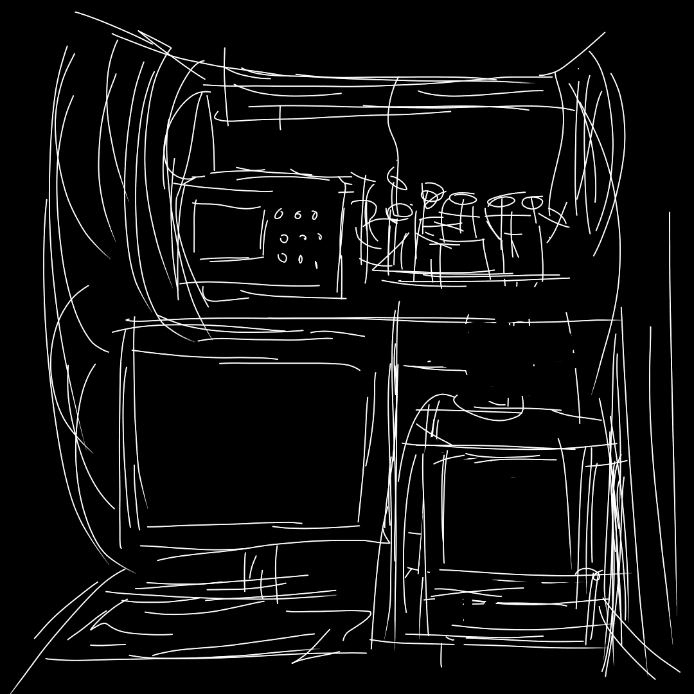
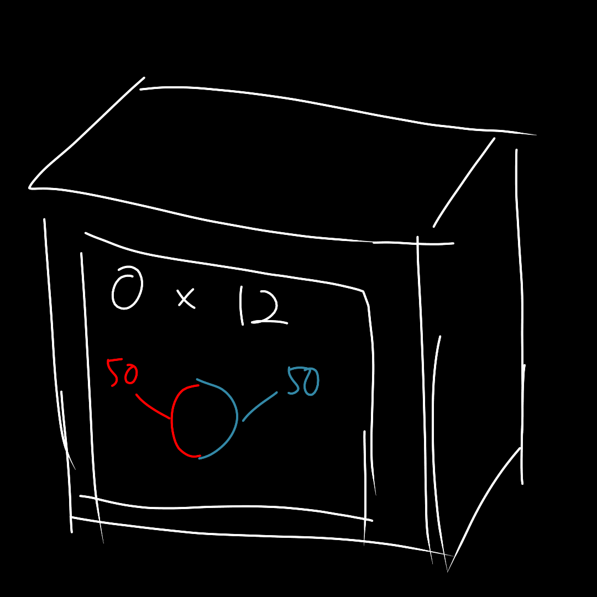
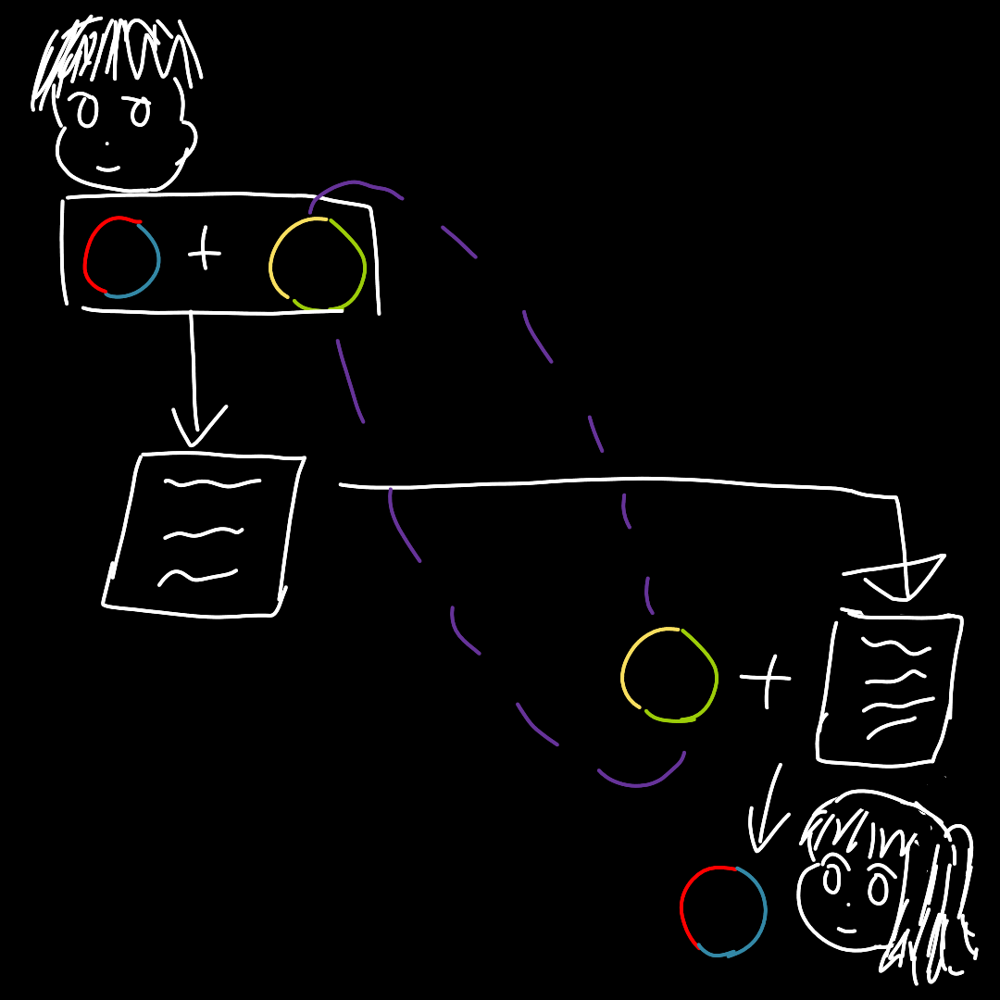

"Do you know that you can teleport quantum states? Sounds cool, right?" Stephen brings you to a room that has a sign "Delivery". Both of you sit in front of a machine with a bunch of loose wires, a monitor, and what seems like a scanner.
Stephen continues: "we will be sending some packages using this device right here. However, I often run into issues when sending quantum information, so I thought that you might be interested in joining."
Stephen turns on the monitor, and then he takes out a box from the storage room nearby. You see a label on the box:
"A company is ordering some quantum balls for their lucky draw, but they are on the other side of the Earth," Stephen says. "We can't just send the balls to them using trucks because the environment is too unstable. The states of the balls will probably collapse before reaching the company, and that's not good. So, we will have to send the states of the ball using quantum teleportation."
"Quantum teleportation? Are you teleporting the lootbox to the other company?" You asked Stephen.
Stephen chuckled. "Of course not! Would you send the entire hard disk if you want to send an file? We are merely sending the states of the quantum balls, but not the physical balls."
"To do that, we will make use of entangled particles. Each of us have particles that are entangled together. If I measure a particle on my side, the states of the particle on their side will update accordingly. This isn't very helpful, as the measurement result is completely random. However, if we mix the entangled particle and our quantum balls, it will also carry information about our balls."
"Now, after I measure the entangled particle on my side, I can email the measurement result to the company. With my measurement results and the entangled particle on their side, they can reconstruct the state of the quantum balls!"
You remember when Stephen mentions that to get the full picture of the entangled particles, you also need to know the states of the other particle. Maybe this is why you also need to send the measurement result.
"To merge the particles and decode them, we need some kind of analyser. As you can see, we have one here... damn it, the analyser broke."
"Uh, can you help me with fixing it? We have a massively simplified version of the protocol on the computer, just follow the instructions and it should be fine."
You look at the terminal.
"Thank you for fixing the analyser. Now we just need to press this button, and the analyser would process the balls and generate the output of measurement."
"As you can see, we have processed the measurement outputs to make it more human-readable," Stephen said. "Of course, you could just email the zeroes and ones instead, but I thought that making it output text would be more interesting."
"Now we just need to email them this output, and they would be able to recover the balls!"
"Oh yeah, we can throw away the balls now. Quantum information cannot be copied, so the quantum states of the balls are actually transferred to them. Now, these balls no longer contain the original quantum states."
The result of the measurement seems really interesting, you decide to jot it down in your memo.